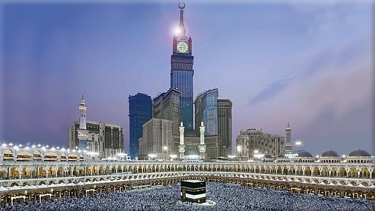

Basics of Islam

5 Pillars of Islam
Profession of Faith (shahada).
أَشْهَدُ أَنْ لَا إِلَٰهَ إِلَّا ٱللَّٰهُ وَأَشْهَدُ أَنَّ مُحَمَّدًا رَسُولُ ٱللَّٰهِ
⟶ ašhadu ʾan lā ʾilāha ʾilla -llāhu, wa-ʾašhadu ʾanna muḥammadan rasūlu -llāhi
⟶ I bear witness that there is no deity but God, and I bear witness that Muhammad is the messenger of God.
Prayer (salat).
Alms (zakat).
Fasting during Ramadhan (sawm).
Pilgrimage to Mecca (hajj).
6 Pillars of Faith (Imaan)
Belief in Allah as the one and only God.
Belief in the Angels.
Belief in the holy books.
Belief in Allah's messengers (prophet) and that Muhammad is the last of them.
Belief in the Day of Judgement.
Belief in the Qadhaa' and Qadr (predestination).